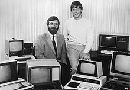

Microsoft is an American multinational technology company with headquarters in Redmond, Washington. It develops, manufactures, licenses, supports and sells computer software, consumer electronics, personal computers, and related services. Its best known software products are the Microsoft Windows line of operating systems, the Microsoft Office suite, and the Internet Explorer and Edge web browsers. Its flagship hardware products are the Xbox video game consoles and the Microsoft Surface lineup of touchscreen personal computers. As of 2016, it is the world's largest software maker by revenue,[5] and one of the world's most valuable companies.[6] The word "Microsoft" is a portmanteau of "microcomputer" and "software". Microsoft was founded by Bill Gates and Paul Allen on April 4, 1975, to develop and sell BASIC interpreters for the Altair 8800. It rose to dominate the personal computer operating system market with MS-DOS in the mid-1980s, followed by Microsoft Windows. The company's 1986 initial public offering (IPO), and subsequent rise in its share price, created three billionaires and an estimated 12,000 millionaires among Microsoft employees. Since the 1990s, it has increasingly diversified from the operating system market and has made a number of corporate acquisitions, their largest being the acquisition of LinkedIn for $26.2 billion in December 2016,[8] followed by their acquisition of Skype Technologies for $8.5 billion in May 2011.[9]
Steve Ballmer replaced Gates as CEO in 2000, and later envisioned a "devices and services" strategy.[11] This began with the acquisition of Danger Inc. in 2008,[12] entering the personal computer production market for the first time in June 2012 with the launch of the Microsoft Surface line of tablet computers; and later forming Microsoft Mobile through the acquisition of Nokia's devices and services division. Since Satya Nadella took over as CEO in 2014, the company has scaled back on hardware and has instead focused on cloud computing, a move that helped the company's shares reach its highest value since December 1999.
History 1972–1985: The founding of Microsoft
Paul Allen and Bill Gates pose for the camera on October 19, 1981, surrounded by PCs after signing a pivotal contract with IBM.[15]:228
Childhood friends Bill Gates and Paul Allen sought to make a successful business utilizing their shared skills in computer programming.[16] In 1972 they founded their first company, named Traf-O-Data, which sold a rudimentary computer to track and analyze automobile traffic data. After a call from Gates claiming to have a working interpreter, MITS requested a demonstration. Since they didn't yet have one, Allen worked on a simulator for the Altair while Gates developed the interpreter. Although they developed the interpreter on a simulator and not the actual device, it worked flawlessly when they (in March 1975) demonstrated the interpreter to MITS in Albuquerque, New Mexico. In August 1977 the company formed an agreement with ASCII Magazine in Japan, resulting in its first international office, "ASCII Microsoft".[22] Microsoft moved to a new home in Bellevue, Washington in January 1979.[19]
 Microsoft entered the operating system (OS) business in 1980 with its own version of Unix, called Xenix.[23] However, it was MS-DOS that solidified the company's dominance. After negotiations with Digital Research failed, IBM awarded a contract to Microsoft in November 1980 to provide a version of the CP/M OS, which was set to be used in the upcoming IBM Personal Computer (IBM PC).[24] For this deal, Microsoft purchased a CP/M clone called 86-DOS from Seattle Computer Products, which it branded as MS-DOS, though IBM rebranded it to PC DOS. Following the release of the IBM PC in August 1981, Microsoft retained ownership of MS-DOS. Since IBM had copyrighted the IBM PC BIOS, other companies had to reverse engineer it in order for non-IBM hardware to run as IBM PC compatibles, but no such restriction applied to the operating systems. Due to various factors, such as MS-DOS's available software selection, Microsoft eventually became the leading PC operating systems vendor.[25][26]:210 The company expanded into new markets with the release of the Microsoft Mouse in 1983, as well as with a publishing division named Microsoft Press.[15]:232 Paul Allen resigned from Microsoft in 1983 after developing Hodgkin's disease.